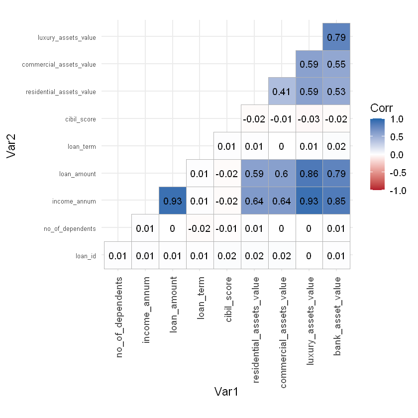

# Instalação de pacotes necessários
pkgs <- c(
"tidymodels",
'glmnet',
"rstanarm"
)
instalar <- pkgs[!pkgs %in% installed.packages()[, "Package"]]
if (length(instalar) > 0) {
install.packages(instalar)
}library(tidyverse)
library("tidymodels")
library('janitor')
library('ggcorrplot')
library(workflowsets)
library(rstanarm)
library(glmnet)#
set.seed(42)loan <- read_csv("../data/Loan/loan_approval_dataset.csv") |>
clean_names()Rows: 4269 Columns: 13 ── Column specification ──────────────────────────────────────────────────────── Delimiter: "," chr (3): education, self_employed, loan_status dbl (10): loan_id, no_of_dependents, income_annum, loan_amount, loan_term, c... ℹ Use `spec()` to retrieve the full column specification for this data. ℹ Specify the column types or set `show_col_types = FALSE` to quiet this message.
#preprocessamento
loan <- janitor::clean_names(loan)
loan <- loan |>
dplyr::filter(residential_assets_value >= 0)loan_num <- loan |>
dplyr::select(where(is.numeric))
cor_matrix <- cor(
loan_num,
use = "complete.obs",
method = "pearson"
)
ggcorrplot(
cor_matrix,
type = "lower",
lab = TRUE,
lab_size = 4,
colors = c("#b2182b", "white", "#2166ac"),
outline.col = "gray70"
) +
theme_minimal(base_size = 14) +
theme(
axis.text.x = element_text(
angle = 90,
hjust = 1,
vjust = 0.5
),
axis.text.y = element_text(size = 8)
)
vars_categoricas <- c(
"education",
"self_employed"
)
vars_numericas <- c(
"no_of_dependents",
"income_annum",
"loan_amount",
"loan_term",
"cibil_score",
"residential_assets_value",
"commercial_assets_value",
"luxury_assets_value",
"bank_asset_value"
)
# One-Hot Encoding
loan_encoded <- loan %>%
mutate(
education = factor(education),
self_employed = factor(self_employed)
) %>%
fastDummies::dummy_cols(
select_columns = vars_categoricas,
remove_selected_columns = TRUE,
remove_first_dummy = TRUE
)
# Padronização (Standardization)
#loan_encoded[vars_numericas] <- lapply(
# loan_encoded[vars_numericas],
# function(x) as.numeric(as.character(x))
#)
#loan_encoded[vars_numericas] <- scale(loan_encoded[vars_numericas])#remodendo loan id
loan_encoded <- loan_encoded |>
dplyr::select(-loan_id)
loan_encoded$loan_status <- ifelse(
loan_encoded$loan_status %in% c("Approved", 1, "1"),
1, 0
)
loan_encoded$loan_status <- as.factor(loan_encoded$loan_status)
split <- initial_split(
loan_encoded,
prop = 0.75,
strata = loan_status
)
train_data <- training(split)
test_data <- testing(split)# One-Hot Encoding
loan_ohe <- loan %>%
mutate(
education = factor(education),
self_employed = factor(self_employed)
) %>%
fastDummies::dummy_cols(
select_columns = vars_categoricas,
remove_selected_columns = TRUE,
remove_first_dummy = TRUE
)
split <- initial_split(
loan_ohe,
prop = 0.75,
strata = loan_status
)
train_data_not <- training(split)
test_data_not <- testing(split)count(train_data, loan_status)
count(test_data, loan_status)| loan_status | n |
|---|---|
| <fct> | <int> |
| 0 | 1200 |
| 1 | 1980 |
| loan_status | n |
|---|---|
| <fct> | <int> |
| 0 | 401 |
| 1 | 660 |
para o frequentista - Modelo geral (tudo) OK - Modelo apenas com score Ok - Modelo sem score ok - Modelo com remoção das feats correlacionadas ok - Modelo com PCA - Modelo com regularização para selecionar feats (glmnet) ok
rec_lasso <- recipe(loan_status ~ ., data = train_data) %>%
step_dummy(all_nominal_predictors()) %>%
step_normalize(all_numeric_predictors())
logit_lasso_spec <- logistic_reg(
penalty = tune(),
mixture = 1 # LASSO puro
) %>%
set_engine("glmnet")
wf_lasso <- workflow() %>%
add_recipe(rec_lasso) %>%
add_model(logit_lasso_spec)
folds <- vfold_cv(train_data, v = 5)
grid_lambda <- grid_regular(penalty(), levels = 50)
lasso_res <- tune_grid(
wf_lasso,
resamples = folds,
grid = grid_lambda,
metrics = metric_set(roc_auc)
)
best_lambda <- select_best(lasso_res, metric = "roc_auc")
best_lambda| penalty | .config |
|---|---|
| <dbl> | <chr> |
| 0.001389495 | pre0_mod36_post0 |
final_lasso_wf <- finalize_workflow(
wf_lasso,
best_lambda
)
final_lasso_fit <- fit(
final_lasso_wf,
data = train_data
)
lasso_coefs <- final_lasso_fit %>%
extract_fit_parsnip() %>%
tidy()
vars_selected <- lasso_coefs %>%
filter(term != "(Intercept)") %>%
filter(estimate != 0) %>%
mutate(abs_est = abs(estimate))
vars_importance <- vars_selected %>%
mutate(importance = abs_est / sum(abs_est)) %>%
select(variable = term, importance) %>%
arrange(desc(importance))
vars_importance| variable | importance |
|---|---|
| <chr> | <dbl> |
| cibil_score | 0.578373789 |
| income_annum | 0.144973617 |
| loan_amount | 0.133237908 |
| loan_term | 0.114876889 |
| bank_asset_value | 0.009355327 |
| commercial_assets_value | 0.006429094 |
| no_of_dependents | 0.006130255 |
| self_employed_Yes | 0.004360122 |
| education_Not Graduate | 0.002262998 |
not_best_vars <- vars_importance %>%
dplyr::filter(importance < 0.10) %>%
dplyr::pull(variable)#modelo geral
rec_all <- recipe(loan_status ~ ., data = train_data)
rec_all_not <- recipe(loan_status ~ ., data = train_data_not)
# score only
rec_score_only <- recipe(
loan_status ~ cibil_score,
data = train_data
)
#resultado da regularização
rec_feat_select <- recipe(
loan_status ~ .,
data = train_data
) %>%
step_rm(all_of(not_best_vars))
rec_feat_select_not <- recipe(
loan_status ~ .,
data = train_data_not
) %>%
step_rm(all_of(not_best_vars))
#no score
rec_no_score <- recipe(
loan_status ~ .,
data = train_data
) |>
step_rm(cibil_score)
# Removendo alta correlação
rec_no_assets <- recipe(
loan_status ~ .,
data = train_data
) |>
step_rm(luxury_assets_value, bank_asset_value)
rec_no_assets_not <- recipe(
loan_status ~ .,
data = train_data_not
) |>
step_rm(luxury_assets_value, bank_asset_value)
#com pca
rec_pca <- recipe(
loan_status ~ .,
data = train_data
) |>
step_normalize(all_numeric_predictors()) |>
step_pca(
all_numeric_predictors(),
threshold = 0.95
)log_spec <- logistic_reg() |>
set_engine("glm") |>
set_mode("classification")wf_logit <- workflow_set(
preproc = list(
all_features_std = rec_all,
score_only_std = rec_score_only,
no_score_std = rec_no_score,
no_assets_std = rec_no_assets,
feat_select_std = rec_feat_select,
),
models = list(
logit = log_spec
)
)
wf_pca <- workflow_set(
preproc = list(
pca = rec_pca
),
models = list(
logit = log_spec
)
)ERROR: Error in list(all_features_std = rec_all, score_only_std = rec_score_only, : argumento 6 está vazio
Error in list(all_features_std = rec_all, score_only_std = rec_score_only, : argumento 6 está vazio
Traceback:
1. .handleSimpleError(function (cnd)
. {
. watcher$capture_plot_and_output()
. cnd <- sanitize_call(cnd)
. watcher$push(cnd)
. switch(on_error, continue = invokeRestart("eval_continue"),
. stop = invokeRestart("eval_stop"), error = NULL)
. }, "argumento 6 está vazio", base::quote(list(all_features_std = rec_all,
. score_only_std = rec_score_only, no_score_std = rec_no_score,
. no_assets_std = rec_no_assets, feat_select_std = rec_feat_select,
. )))wf_set <- rbind(
wf_logit,
wf_pca
)wf_fitted <- wf_set %>%
mutate(
fit = purrr::map(
info,
~ fit(.x$workflow[[1]], data = train_data)
)
)
wf_fitted_not <- wf_logit_not %>%
mutate(
fit = purrr::map(
info,
~ fit(.x$workflow[[1]], data = train_data_not)
)
)library(dplyr)
library(purrr)
library(yardstick)
preds <- wf_fitted %>%
mutate(
preds = purrr::map(
fit,
~{
prob_tbl <- predict(.x, test_data, type = "prob")
tibble(
truth = test_data$loan_status,
class = predict(.x, test_data, type = "class")$.pred_class,
prob = prob_tbl$.pred_1
)
}
)
) %>%
select(wflow_id, preds)
preds <- preds %>%
tidyr::unnest(preds)preds <- preds %>%
tidyr::unnest(preds)metrics_table <- preds %>%
group_by(wflow_id) %>%
summarise(
# 📌 classificação geral
accuracy = accuracy_vec(truth, class),
bal_accuracy = bal_accuracy_vec(truth, class),
# 📌 ranking / separação
roc_auc = roc_auc_vec(truth, prob, event_level = "second"),
log_loss = mn_log_loss_vec(truth, prob),
# 📌 sensibilidade / especificidade
sens = sens_vec(truth, class),
spec = spec_vec(truth, class),
# 📌 custo de erro (crédito)
precision = precision_vec(truth, class),
npv = npv_vec(truth, class),
# 📌 equilíbrio
f1 = f_meas_vec(truth, class),
f2 = f_meas_vec(truth, class, beta = 2),
# 📌 robustez estatística
kap = kap_vec(truth, class),
mcc = mcc_vec(truth, class),
# 📌 equilíbrio sens/spec
gmean = sqrt(sens_vec(truth, class) * spec_vec(truth, class)),
.groups = "drop"
)metrics_tableextract_model_summary <- function(wf_fit) {
model_fit <- workflows::extract_fit_parsnip(wf_fit)
if (inherits(model_fit$fit, "glm")) {
return(summary(model_fit$fit))
}
if (inherits(model_fit$fit, "lognet")) {
return(model_fit$fit)
}
NULL
}model_summaries <- wf_fitted %>%
mutate(
summary = purrr::map(fit, extract_model_summary)
) %>%
select(wflow_id, summary)
for (i in seq_len(nrow(model_summaries))) {
cat("\n==============================\n")
cat("Modelo:", model_summaries$wflow_id[i], "\n")
cat("==============================\n\n")
print(model_summaries$summary[[i]])
}metrics_tablefits_vif <- fits %>%
dplyr::filter(
wflow_id %in% c(
"all_features_logit",
"no_assets_logit",
"no_score_logit",
"feat_select_logit"
)
)
#apenas os modelos sem PCA...library(car)
calc_vif <- function(wf_fit) {
wf_fit %>%
workflows::extract_fit_parsnip() %>%
pluck("fit") %>% # objeto glm
car::vif()
}
vif_results <- fits_vif %>%
mutate(
vif = purrr::map(fit, calc_vif)
)vif_tidy <- vif_results %>%
select(wflow_id, vif) %>%
tidyr::unnest_longer(vif, values_to = "vif") %>%
rename(variable = vif_id)vif_summary <- vif_tidy %>%
group_by(wflow_id) %>%
summarise(
max_vif = max(vif),
mean_vif = mean(vif)
)
vif_summaryget_model <- function(wf_fit) {
workflows::extract_fit_parsnip(wf_fit)$fit
}purrr::walk2(
wf_fitted$fit,
wf_fitted$wflow_id,
~ {
modelo <- get_model(.x)
par(mfrow = c(2, 2))
plot(
modelo,
pch = 19,
col = "blue",
main = .y
)
}
)all_features_logit não é adequado para inferência, apesar do ótimo desempenho. no_assets_logit reduz drasticamente a colinearidade sem perda preditiva. feat_select_logit também melhora o VIF, mas menos que no_assets_logit.
library(dplyr)
model_summary <- metrics_table %>%
select(
wflow_id,
accuracy,
bal_accuracy,
roc_auc,
f1
) %>%
left_join(
vif_summary %>%
group_by(wflow_id) %>%
summarise(
max_vif = max(max_vif, na.rm = TRUE),
mean_vif = mean(mean_vif, na.rm = TRUE)
),
by = "wflow_id"
)library(dplyr)
model_summary <- metrics_table %>%
left_join(
vif_summary %>%
group_by(wflow_id) %>%
summarise(
max_vif = max(max_vif, na.rm = TRUE),
mean_vif = mean(mean_vif, na.rm = TRUE)
),
by = "wflow_id"
)model_summarybom, no_score aponta que o cibil_score é importante — Modelos com melhores desempenhos geral all_features_logit feat_select_logit no_assets_logit - ROC AUC ~ 0.976 - F1 ~ 0.905–0.906 all_features_logit -> Max VIF = 18.15 → forte colinearidade feat_select_logit -> Max VIF = 8.03 → redução significativa no_assets_logit -> melhor equilíbrio entre VIF (média menor) e performance
O PCA não aplica VIF e tem uma queda na performance
library(tidymodels)
library(rstanarm)library(rstanarm)
fit_bayes <- stan_glm(
loan_status ~ . - luxury_assets_value - bank_asset_value,
data = train_data,
family = binomial(link = "logit"),
prior = normal(0, 1),
prior_intercept = normal(0, 5),
chains = 4,
iter = 2000,
seed = 123
)post_prob <- posterior_linpred(
fit_bayes,
newdata = test_data,
transform = TRUE
)
prob_mean <- colMeans(post_prob)pred_class <- ifelse(prob_mean > 0.5, "yes", "no") %>%
factor(levels = levels(test_data$loan_status))library(dplyr)
preds_bayes <- test_data %>%
mutate(
prob = prob_mean,
class = factor(
ifelse(prob >= 0.5, "1", "0"),
levels = levels(loan_status)
),
truth = loan_status,
wflow_id = "bayes_logit"
)
preds_bayes <- preds_bayes %>%
mutate(wflow_id = "bayes_logit")library(yardstick)
library(dplyr)
metrics_bayes <- preds_bayes %>%
group_by(wflow_id) %>%
summarise(
# 📌 classificação geral
accuracy = accuracy_vec(truth, class),
bal_accuracy = bal_accuracy_vec(truth, class),
# 📌 ranking / separação
roc_auc = roc_auc_vec(truth, prob, event_level = "second"),
log_loss = mn_log_loss_vec(truth, prob),
# 📌 sensibilidade / especificidade
sens = sens_vec(truth, class),
spec = spec_vec(truth, class),
# 📌 custo de erro (crédito)
precision = precision_vec(truth, class),
npv = npv_vec(truth, class),
# 📌 equilíbrio
f1 = f_meas_vec(truth, class),
f2 = f_meas_vec(truth, class, beta = 2),
# 📌 robustez estatística
kap = kap_vec(truth, class),
mcc = mcc_vec(truth, class),
# 📌 equilíbrio sens/spec
gmean = sqrt(
sens_vec(truth, class) * spec_vec(truth, class)
),
.groups = "drop"
)table(preds_bayes$class)library(car)
vif_bayes <- car::vif(fit_bayes)
vif_bayesvif_summary <- tibble(
max_vif = max(vif_bayes, na.rm = TRUE),
mean_vif = mean(vif_bayes, na.rm = TRUE)
)metrics_bayes <- bind_cols(metrics_bayes, vif_summary)metrics_all <- bind_rows(
model_summary,
metrics_bayes
)
metrics_allpar(mfrow = c(2, 2))
plot(
fit_bayes,
pch = 19,
col = "blue",
main = "Bayesian Logistic Regression"
)
par(mfrow = c(1, 1)) # reset layoutlibrary(bayesplot)
pp_check(fit_bayes, type = "dens_overlay")